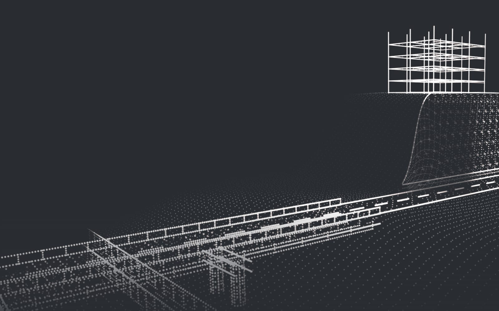
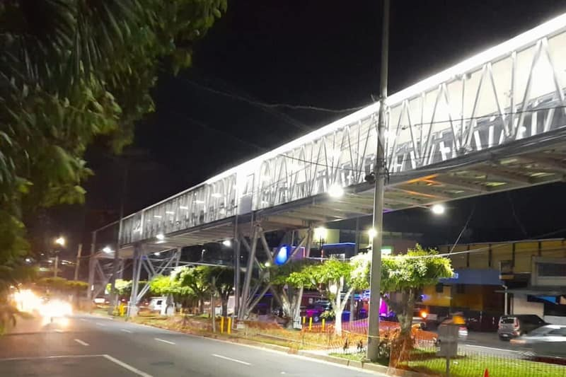
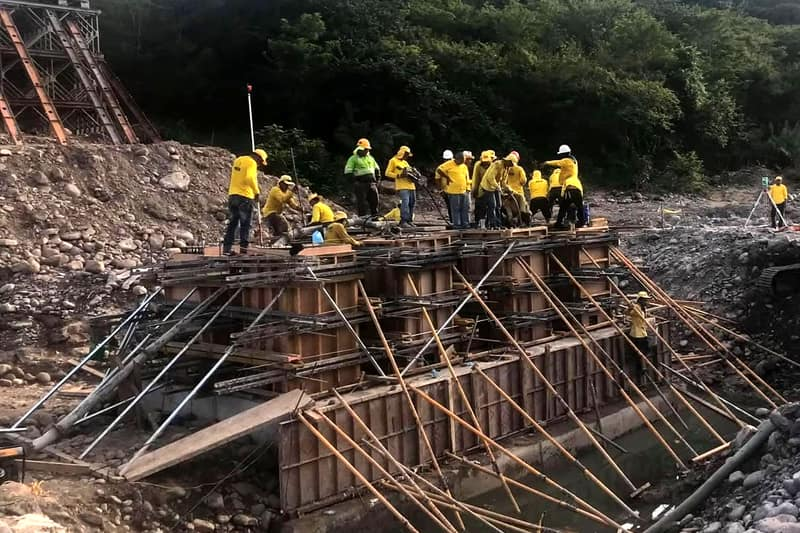
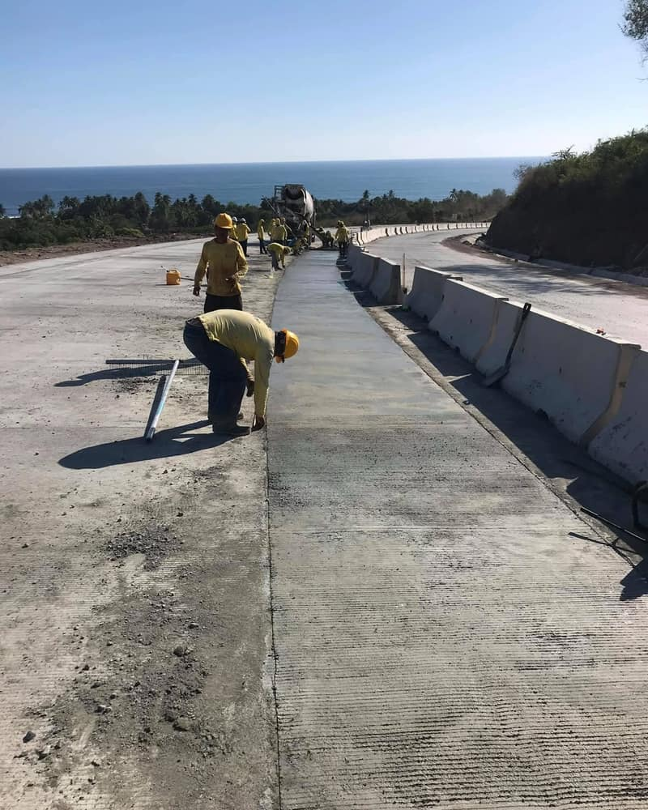
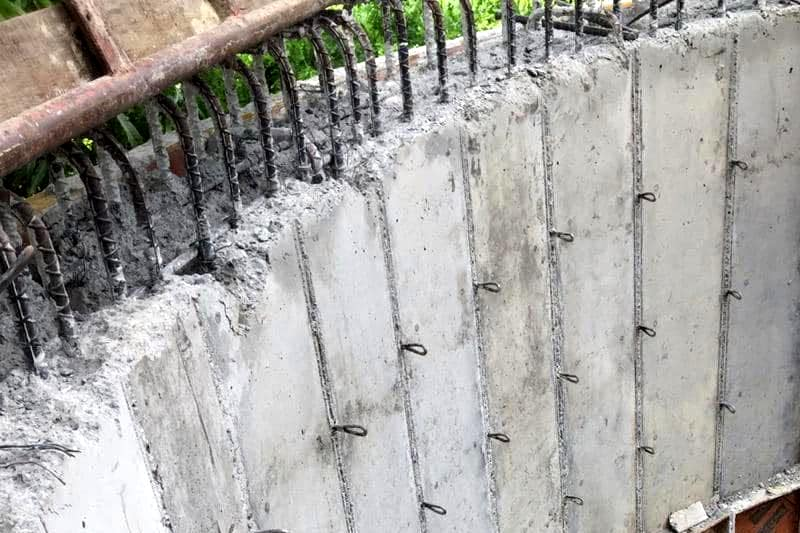
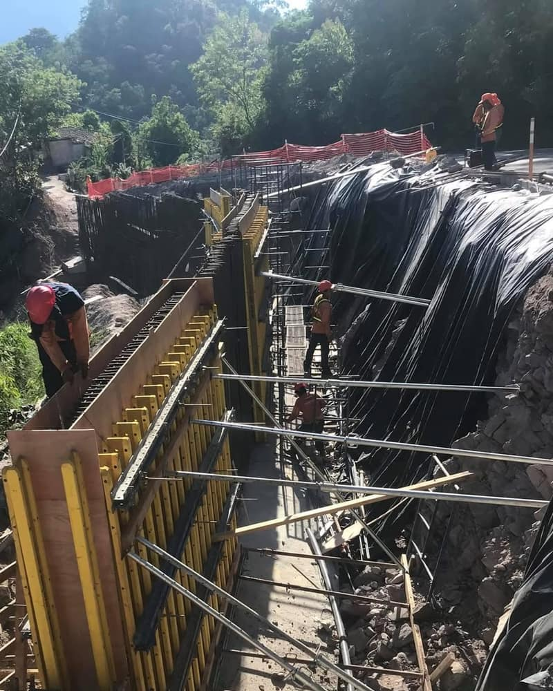
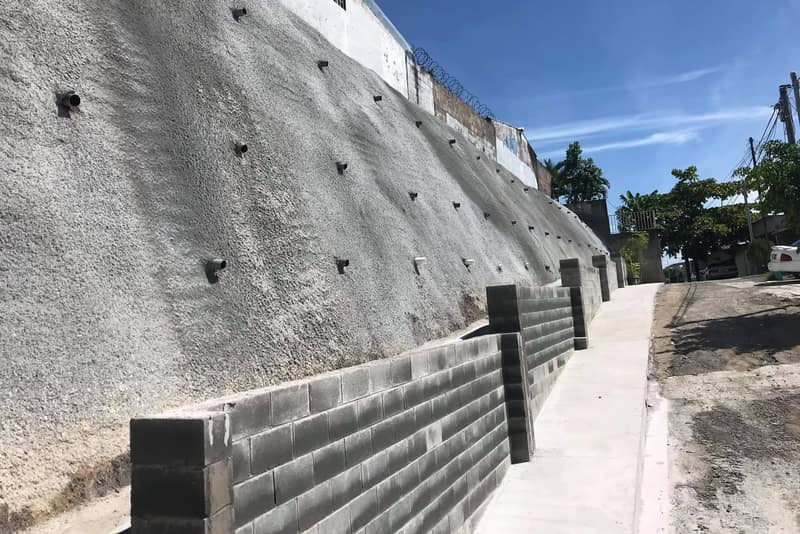
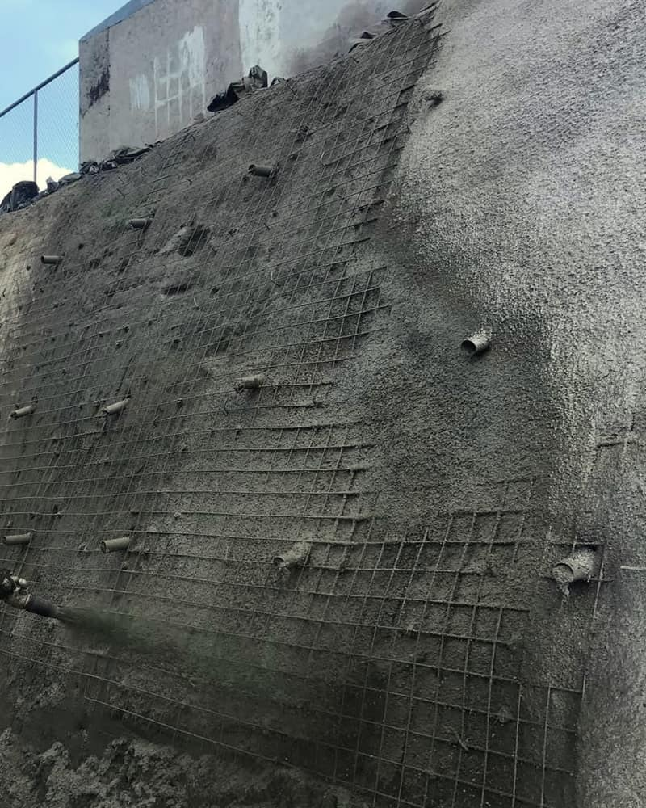

Ingeniería civil en todo El Salvador, desde 2011
Carreteras, puentes, obras hidráulicas, estabilización y edificación para entidades públicas, constructoras y desarrolladores.
- Puentes
- Obras hidráulicas
- Carreteras
- Estabilización
- Edificación
Experiencia en todo el país
Obra pública y privada desde 2011, de La Unión a Sonsonate.
- Desde
- 2011
- Obras realizadas
- 18
- Departamentos
- 8
- Clientes
- Entidades públicas y privadas
Qué hacemos
Cinco áreas de la ingeniería civil, con equipo propio.
-
Carreteras y caminos
Construcción, ampliación, reconstrucción y mejoramiento de carreteras y caminos.
5 obras realizadas -
Puentes y pasarelas
Puentes vehiculares, bases y estribos de concreto armado, reparación de puentes y pasarelas peatonales.
5 obras realizadas -
Obras hidráulicas y drenaje
Drenaje de aguas lluvias, protección de cauces, bóvedas y tanques de agua potable.
4 obras realizadas -
Estabilización y mitigación
Protección de taludes, muros de concreto armado y mitigación en cárcavas y laderas.
3 obras realizadas -
Edificación y vivienda
Construcción de viviendas y edificios.
1 obra realizada
Para quién trabajamos
-
Entidades contratantes
Obra pública de carreteras, puentes, drenaje y mitigación, en varios departamentos del país.
-
Constructoras
Ejecutamos como subcontratista la obra civil de su proyecto: carreteras, puentes, drenaje, muros y estructuras, con equipo propio.
-
Desarrolladores inmobiliarios
Viviendas, edificación y las obras que las acompañan: drenajes, muros y accesos.
-
Empresas y particulares
Muros, drenajes, protección de terrenos y caminos de acceso.
Obras realizadas
Las 18 obras, de la más reciente a la más antigua. Las fotos están al final, para quien quiera verlas.
| Año | Obra | Área | Departamento |
|---|---|---|---|
| – | Mitigación de cárcava y bóveda | Estabilización | San Salvador |
| – | Pasarela peatonal Ver foto | Puentes | San Salvador |
| Tanque de agua potable Ver foto | Obras hidráulicas | Sin dato | |
| Carretera de circunvalación | Carreteras | San Miguel | |
| – | Protección de talud Ver foto | Estabilización | La Unión |
| Bases de puente sobre río Ver foto | Puentes | Morazán | |
| – | Mejoramiento de camino | Carreteras | La Unión |
| Ampliación de carretera | Carreteras | La Libertad | |
| Construcción de viviendas | Edificación | Usulután | |
| – | Mitigación con malla de alta resistencia | Estabilización | La Libertad |
| Obras de drenaje | Obras hidráulicas | Sin dato | |
| Obras de drenaje | Obras hidráulicas | Usulután | |
| Construcción de carretera | Carreteras | Chalatenango | |
| Reconstrucción de carretera | Carreteras | Chalatenango | |
| Obras de drenaje y mitigación | Obras hidráulicas | San Salvador | |
| Reparación de puente y pasarela peatonal | Puentes | La Libertad | |
| Puente vehicular y protección de cauce | Puentes | Sonsonate | |
| – | Puentes vehiculares | Puentes | La Unión |
Ver fotos de obra (7)Ocultar las fotos
Fotos tomadas por la empresa durante la construcción.







La empresa
CONPAV es el nombre abreviado de Concretos y Pavimentos, S.A. de C.V., empresa salvadoreña de ingeniería civil con sede en San Salvador. Desde 2011 ejecuta obra para entidades públicas y privadas en todo el país, con equipo propio.
- Razón social
- Concretos y Pavimentos, S.A. de C.V.
- Actividad
- Construcción de obras de ingeniería civil
- Sede
- San Salvador
- Desde
- 2011
- Obras en
- San Salvador, La Libertad, Sonsonate, Chalatenango, Usulután, San Miguel, La Unión y Morazán
- Equipo propio
- Retroexcavadora, concreteras y autohormigonera, equipos de concreto lanzado, perforadoras neumáticas de roca, compresor, compactadoras, rodo liso y plantas eléctricas
Cuéntenos de su proyecto
Para cotizar nos sirve saber qué obra es, dónde está y, si los tiene, planos o fotos.
- 7227-7828
- Correo
- cconpav15@gmail.com
- Horario
- Lunes a viernes, de 8:00 a. m. a 5:00 p. m.; sábado, de 9:00 a. m. a 3:00 p. m.
- Sede
- San Salvador